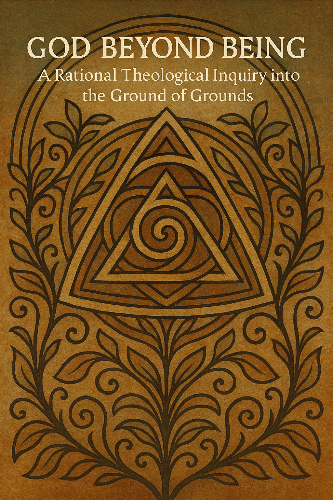

class="flex justify-center">

Paper Title Placeholder
This work explores the metaphysical and theological implications of asking the question of questions: What is the root of existence itself? It argues that the foundation of all that is must lie beyond perceivable being itself—a metaphysical Ground that gives rise to existence, intelligibility, and relation. Through rigorous reasoning, it reframes the concept of divinity not as a supreme being, but as the enabling condition of reality. Rooted in the ethos of Sympnoia, it calls for a theology grounded not in dogma, but in shared, rational inquiry into the deepest structures of existence.
class="flex justify-center">
Another Paper Title
Another short description that introduces the theme of the second paper, elaborating its relevance and philosophical grounding within the Sympnoia ethos.